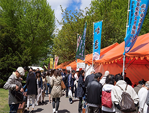
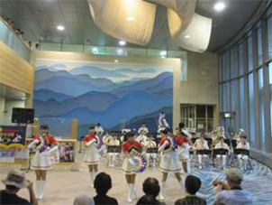
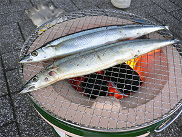
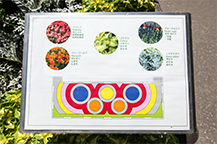
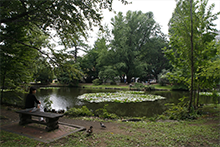
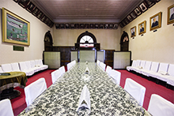
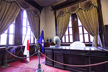
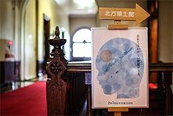
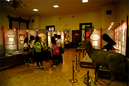

赤れんが庁舎について
かつて北海道は、函館県・札幌県・根室県の３県１局制をとっていました。しかし、どうにもまとまりが悪いし、人口密度もやたら低いしであんまり良いことがありませんでした。
そこで北海道はもう『北海道』として一括りにしてしまおう、ということになりました。その際に、北海道の新しいシンボル、北海道庁として立てられたのが赤れんが庁舎なのです。
北海道庁が観光名所なの？と疑問に思う方もいるのではないでしょうか。大丈夫、今の赤れんが庁舎は旧北海道庁です。屋内にも気軽に入れます。
西洋風の建物なので、赤れんが庁舎が現役だった時代の職員の方々は、なんとなく居心地が悪く働きづらかったことでしょう。やはり、日常的にいるなら普通の建物が一番ですよね。 が、しかし！ 観光客、つまり旅行者にとっては、非日常こそが求めているものだろうと思います。その綺麗な建物は、外観を見ただけでも来た甲斐があったと思うこと間違いありません。そして、入場も無料なので館内にも気軽に入れます。館内はまさしく外国！ と言った感じなので観光地にはピッタリです。
イベント・お知らせ
-

北のめぐみ愛食フェア
〇開催日
・7月17日（祝）～21日（金）
・9月5日（火）～8日（金）
〇開催時間
各日10：00～17：00
（最終日は16：00まで）
〇主催者・お問い合わせ先
農政部職の安全推進局食品政策課
（011-204-5432）
〇場所
前庭 -

北海道警察音楽隊赤れんがコンサート
〇開催日
・7月25日（火）
・8月22日（火）
・9月22日（金）
〇開催時間
各日12：10～12：50
〇主催者・お問い合わせ先
北海道警察音楽隊
（011-251-0110）
〇場所
前庭 -

根室さんま直送市
〇開催日
・9月20日（水）～21日（木）
〇開催時間
各日10：00～18：00
（最終日は17：00まで）
〇主催者・お問い合わせ先
総務部総務課
（011-204-5055）
〇場所
前庭
新着情報
-
〇赤れんが庁舎前庭の桜の開花情報をお知らせしています。
-
〇一般社団法人北海道建設業協会及び一般社団法人札幌建設業協会
より赤れんが庁舎前庭のレンガ舗装をご寄贈いただきました。
（総務部総務課） -
〇赤れんがFree Wi-Fiサービスの提供中です。(総務部総務課・経済部観光局)
過去の更新情報はこちらをご覧ください。
ギャラリー
-
ようこそ北海道へ！
-

庁舎では5種類のお花を栽培しています。
-

希少なマガモとゆったり過ごせます。
-
庁舎内に入りました。上には何があるかというと・・
-

会議室です。いろんなことがここで決められました。
-

使われることのなくなった知事室です。
-

2月7日は北方領土の日です。
-

様々な展示品がありますので飽きずに楽しめることでしょう。
交通案内
住所 札幌市中央区北3条西6丁目
営業時間 8時45分～18時
定休日 年末年始
料金 無料
駐車場 なし
道筋
・地下鉄南北線・東豊線・JR線「さっぽろ（札幌）」 下車、徒歩8分
・地下鉄南北線・東西線・東豊線「大通」 下車 、徒歩9分